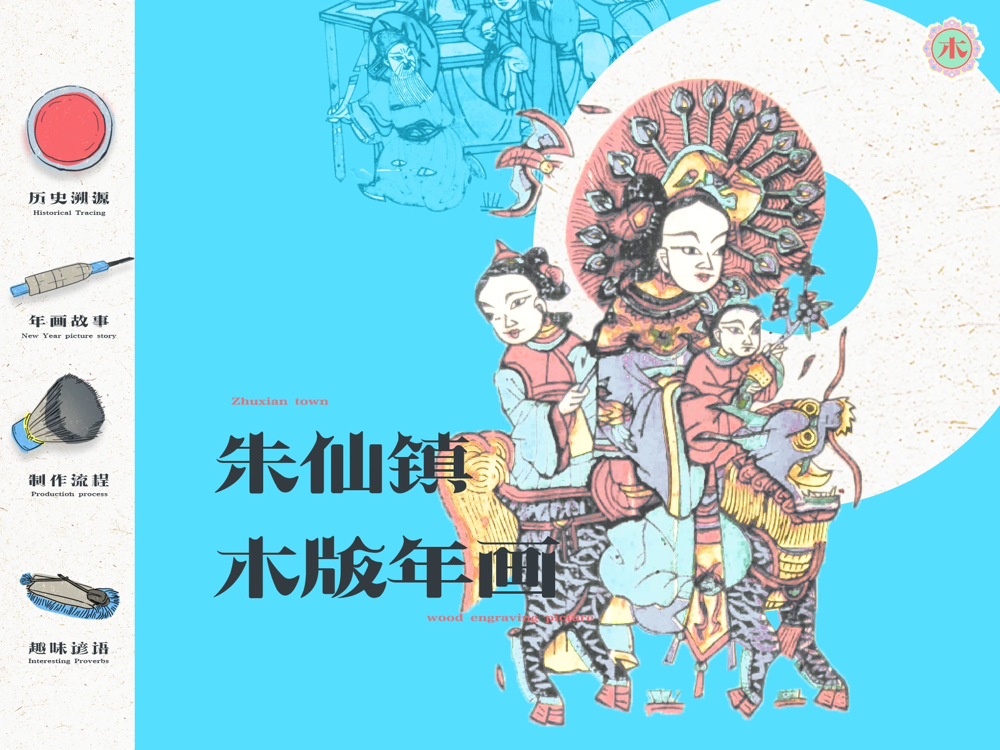
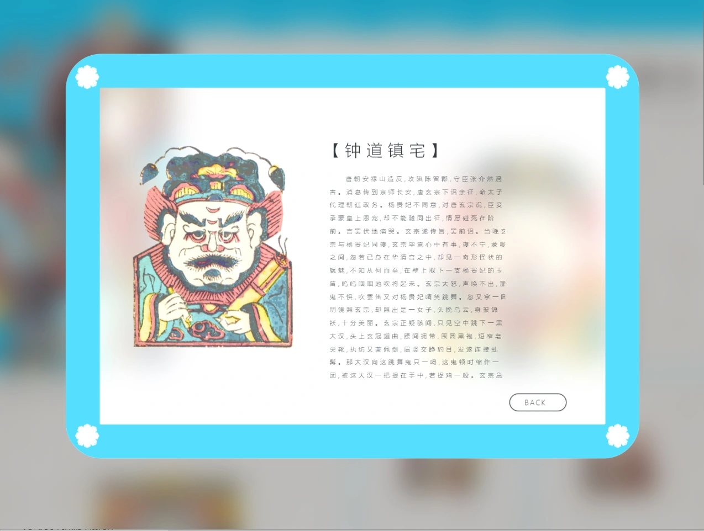
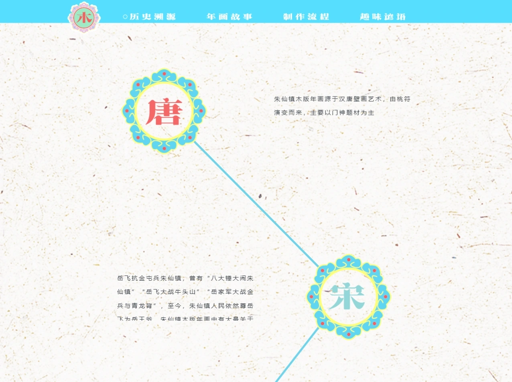
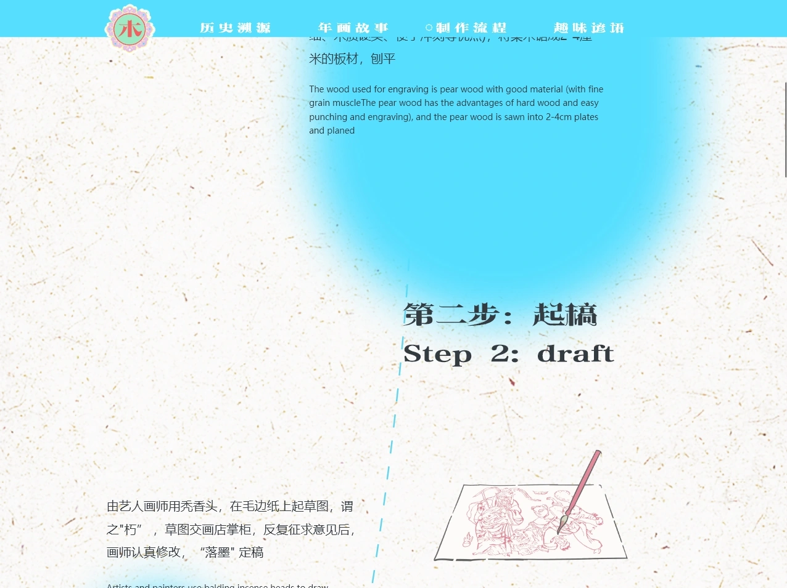
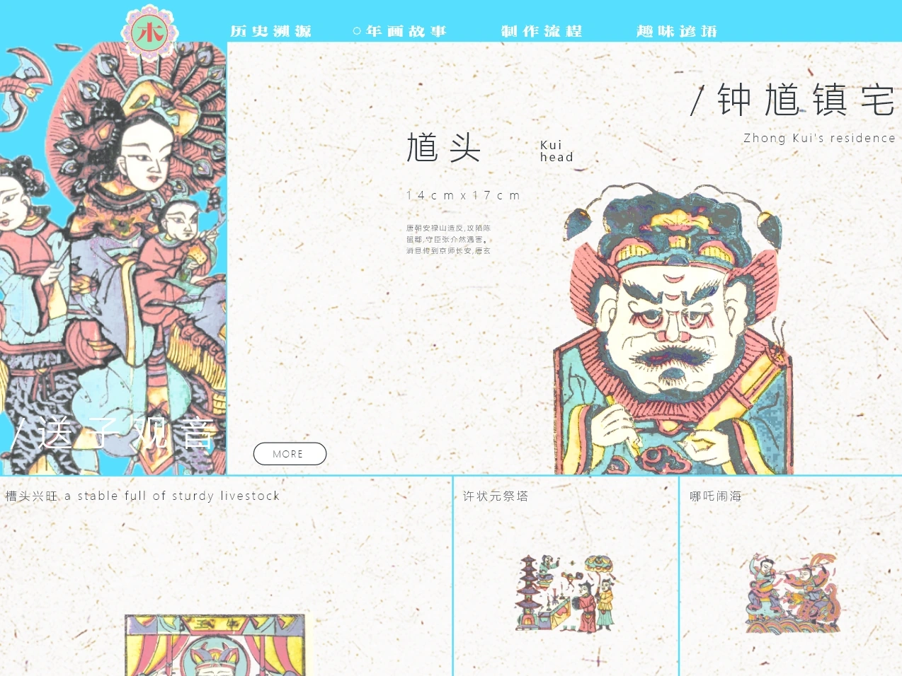
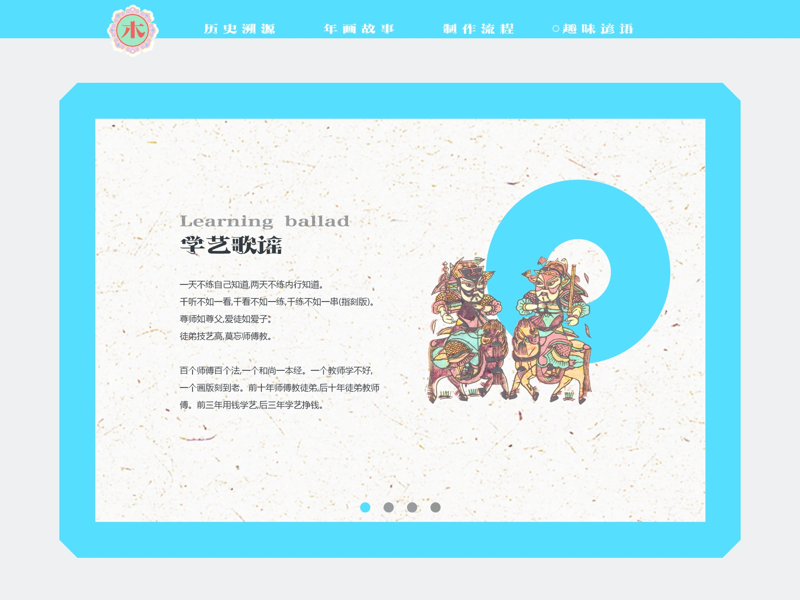
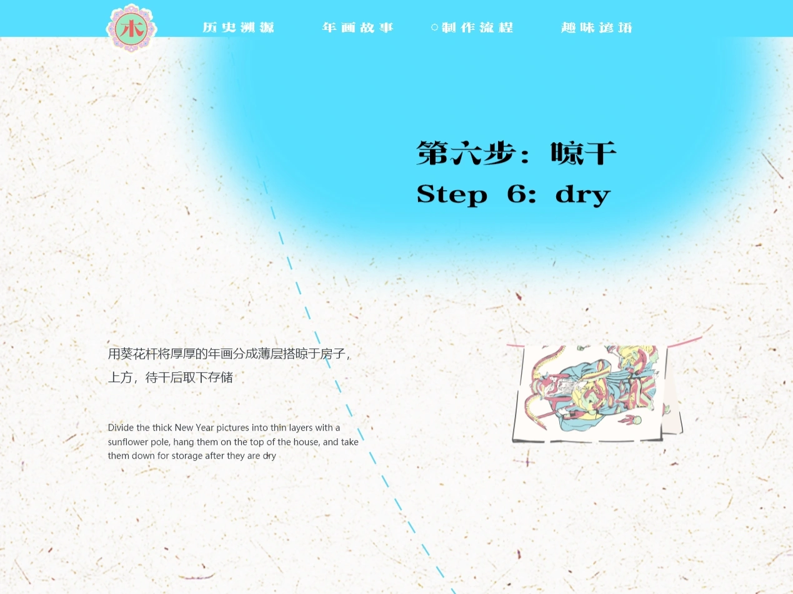
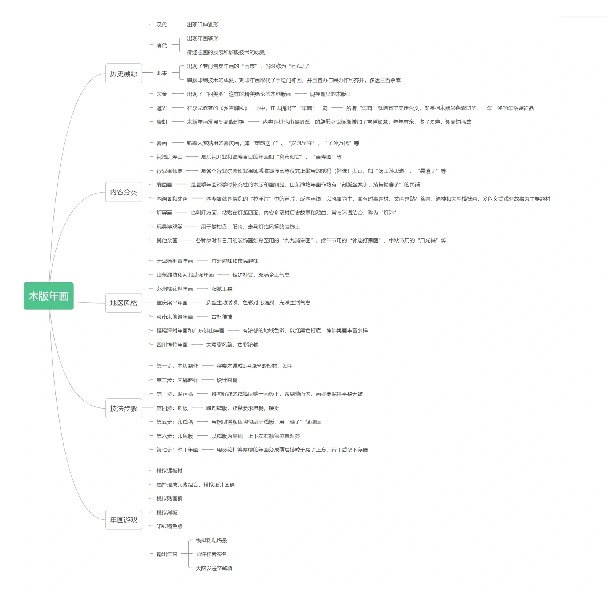
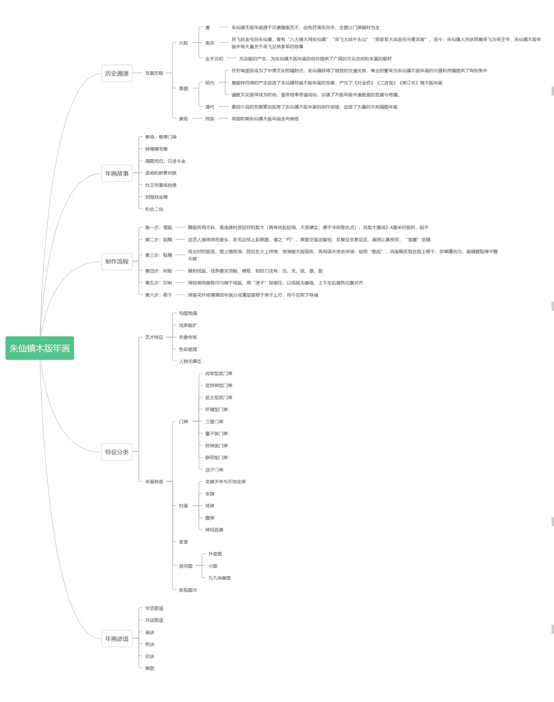

Tablet interface prototype
Woodblock Reimagined
A print is more than
an image to look at.
A tablet concept for exploring Zhuxianzhen New Year prints through their history, characters, making process and vernacular stories. The interface moves between a visual overview and closer reading.


Four routes into
one craft tradition.
The home screen offers history, print stories, production and folk sayings. Each route uses a different reading pattern instead of putting every kind of material into one gallery.
Follow a vertical timeline.
Browse images and open details.
Read the process step by step.
Move through short illustrated passages.




From the image grid
to the story behind it
The print-stories route keeps visual recognition in the foreground. A detail overlay brings the selected figure and accompanying explanation together; the surrounding page remains visible as context.







Watch the original
tablet flow
The recording shows the designed transitions, scrolling, image selection and reading views. It is a prototype walkthrough, not a deployed educational application.
Narrowing the subject
before drawing the screens
The original archive preserves an early information map and a later map focused on Zhuxianzhen. These documents show how the content was organised before the final screens.
Compare the original information maps




What this prototype demonstrates
A visual navigation system linking cultural imagery with layered explanations. A next evaluation would test whether readers understand where they are, can dismiss detail views easily and can follow the making sequence without losing their place.
Source materials: the original Adobe XD project, interface exports, information maps and interaction recording. Presented as a design prototype; no measured learning or usability improvement is claimed.